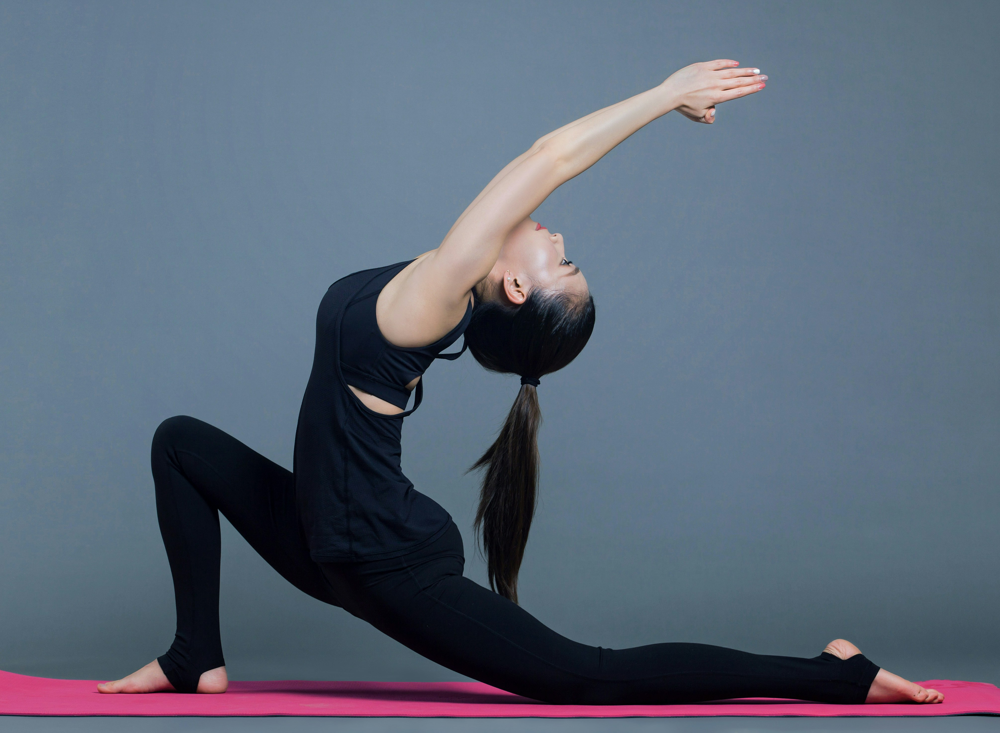

Yoga
Grundlagen, typische Posen und eine einfache Anfänger-Routine.
Basics
- Atmung ruhig und gleichmäßig
- Bewegungen kontrolliert, keine Schmerzen erzwingen
- Haltung vor Tiefe
Mini-Routine (5–8 Minuten)
- Kindhaltung – 30–60 Sekunden
- Katze/Kuh – 6–8 Wiederholungen
- Herabschauender Hund – 30–45 Sekunden
- Vorbeuge – 30 Sekunden
Tipp: Wenn du Videos nutzt, kombiniere sie immer mit Text (was genau soll man beachten? woran merkt man, dass es passt?).
Bild & Video (mit Geschwindigkeitswahl)
Das ist ein Beispiel, wie ich Inhalte aufbaue: Erst eine kurze Erklärung, dann Visuals (Bild/Video) und am Ende klare Anfänger-Tipps.

Bild: lizenzfreies Stockfoto (Unsplash). Optionaler Credit im Text/Impressum: Alex Shaw.
Übung im Video: Kopfstand / Headstand (Sirsasana). Hauptarbeit machen Schultern/Arme und der Core zur Stabilisierung. (Stockvideo von Pexels, Titel: „Woman Doing Headstand“, Creator: Vlada Karpovich.)
Kopfstand (Sirsasana) – kurz erklärt
Beim Kopfstand geht’s weniger darum, „einfach kopfüber zu sein“, sondern um Kontrolle. Was ich daran spannend finde: Du brauchst stabile Schultern und einen aktiven Core, sonst kippt man entweder ins Hohlkreuz oder lädt zu viel Druck in den Nacken. Genau deshalb würde ich das als Anfänger eher als langfristiges Ziel sehen und erstmal die Basics sauber aufbauen.
Welche Muskeln arbeiten dabei?
- Schultern & Arme: tragen und stabilisieren (z. B. Deltoids/Trapezius je nach Setup)
- Core: Bauch + tiefe Rumpfmuskeln halten die Linie stabil
- Oberer Rücken/Schultergürtel: Stabilität, um „nicht in die Schultern zu fallen“
Safety first: Kopfstand ist fortgeschritten. Wenn du Nackenprobleme hast oder unsicher bist, lass dir das zeigen oder starte mit vorbereitenden Übungen (z. B. Dolphin/Hund, Core-Spannung). Inhalte sind allgemeine Infos und ersetzen keine medizinische Beratung.